ПРОКЛАДКА ГОЛОВКИ БЛОКА ЦИЛИНДРОВ > УСТАНОВКА |
| 1. ПРОВЕРЬТЕ УСТАНОВОЧНЫЙ БОЛТ ГОЛОВКИ БЛОКА ЦИЛИНДРОВ |
 |
С помощью штангенциркуля измерьте длину установочного болта головки блока цилиндров от седла до торца.
| *a | Измеренная длина |
| 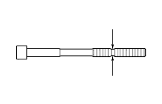 |
С помощью штангенциркуля измерьте диаметр удлиненного резьбового участка в самой узкой видимой зоне.
| 2. ПРОВЕРЬТЕ ГОЛОВКУ БЛОКА ЦИЛИНДРОВ В СБОРЕ |
 |
С помощью прецизионной поверочной линейки и щупа измерьте величину коробления поверхностей, контактирующих с блоком цилиндров в сборе и коллекторами.
| Параметр / Устройство | Заданные условия |
| Со стороны блока цилиндров | 0,05 мм (0,00197 дюйма) |
| Со стороны впуска | 0,08 мм (0,00315 дюйма) |
| Со стороны выпуска | 0,08 мм (0,00315 дюйма) |
| Параметр / Устройство | Заданные условия |
| Со стороны блока цилиндров | 0,10 мм (0,00394 дюйма) |
| Со стороны впуска | 0,10 мм (0,00394 дюйма) |
| Со стороны выпуска | 0,10 мм (0,00394 дюйма) |
| *A | Со стороны блока цилиндров |
| *B | Со стороны впуска |
| *C | Со стороны выпуска |
Методом цветной дефектоскопии проверьте впускные каналы, выпускные каналы и поверхность блока цилиндров на наличие трещин.
При обнаружении трещин замените головку блока цилиндров в сборе.
| 3. УСТАНОВИТЕ ПРОКЛАДКУ ГОЛОВКИ БЛОКА ЦИЛИНДРОВ |
Удалите остатки старого герметика (FIPG). Следите, чтобы масло не попало на сопрягающиеся поверхности головки блока цилиндров и блока цилиндров.
 |
Нанесите герметик на новую прокладку головки блока цилиндров, как показано на рисунке.
| А | 10 - 15 мм (0,394 - 0,591 дюйма) |
| B | 1,25 - 1,5 мм (0,0492 - 0,0591 дюйма) |
| *1 | Герметик |
| *2 | Прокладка |
| 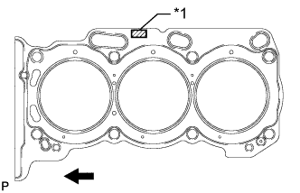 |
Прокладку головки блока цилиндров установите на поверхность блока цилиндров штампом "Lot No." (Номер партии) вверх.
| *1 | Номер партии |
 | Передняя часть двигателя |
| 4. УСТАНОВИТЕ ГОЛОВКУ БЛОКА ЦИЛИНДРОВ В СБОРЕ |
Установите головку блока цилиндров на блок цилиндров.
Нанесите тонкий слой моторного масла на резьбы и под головки болтов головки блока цилиндров.
Шаг 1:
 |
С помощью 12-гранного гаечного ключа на 10 мм вверните, предварительно подложив плоские шайбы, и в несколько приемов равномерно затяните 8 болтов головки блока цилиндров в последовательности, показанной на рисунке.
Шаг 2:
Отметьте краской переднюю сторону головки каждого болта крепления головки блока цилиндров.
Затяните болты головок блока цилиндров, повернув их еще на 90°.
Шаг 3:
Затяните болты головок блока цилиндров, повернув их еще на 90°.
Убедитесь, что все метки, нанесенные краской, располагаются под углом 180° к внешней стороне.
| 5. УСТАНОВИТЕ ПРОКЛАДКУ ГОЛОВКИ БЛОКА ЦИЛИНДРОВ № 2 |
Удалите остатки старого герметика (FIPG). Следите, чтобы масло не попало на сопрягающиеся поверхности головки блока цилиндров и блока цилиндров.
| 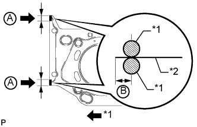 |
Нанесите герметик на новую прокладку головки блока цилиндров, как показано на рисунке.
| А | 10 - 15 мм (0,394 - 0,591 дюйма) |
| B | 1,25 - 1,5 мм (0,0492 - 0,0591 дюйма) |
| *1 | Герметик |
| *2 | Прокладка |
 |
Прокладку головки блока цилиндров установите на поверхность блока цилиндров штампом "Lot No." (Номер партии) вверх.
| *1 | Номер партии |
| Передняя часть двигателя |
| 6. УСТАНОВИТЕ ЛЕВУЮ ГОЛОВКУ БЛОКА ЦИЛИНДРОВ |
Установите головку блока цилиндров на блок цилиндров.
Нанесите тонкий слой моторного масла на резьбы и под головки болтов головки блока цилиндров.
Шаг 1:
| 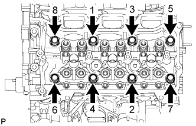 |
С помощью 12-гранного гаечного ключа на 10 мм вверните, предварительно подложив плоские шайбы, и в несколько приемов равномерно затяните 8 болтов головки блока цилиндров в последовательности, показанной на рисунке.
Шаг 2:
Отметьте краской переднюю сторону головки каждого болта крепления головки блока цилиндров.
Затяните болты головок блока цилиндров, повернув их еще на 90°.
Шаг 3:
Затяните болты головок блока цилиндров, повернув их еще на 90°.
Убедитесь, что все метки, нанесенные краской, располагаются под углом 180° к внешней стороне.
| 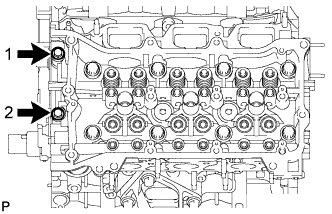 |
Затяните 2 болта в порядке, указанном на рисунке.
| 7. УСТАНОВИТЕ ЗАДНИЙ СОЕДИНИТЕЛЬ ПЕРЕПУСКА ОХЛАЖДАЮЩЕЙ ЖИДКОСТИ |
 |
Смочите мыльным раствором новое кольцевое уплотнение и установите его на выпускной патрубок охлаждающей жидкости. Установите 2 новых прокладки на левый и правый каналы подачи охлаждающей жидкости.
| *1 | Новое кольцевое уплотнение |
| *2 | Новая прокладка |
| 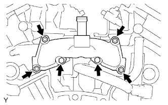 |
Установите задний соединитель перепуска охлаждающей жидкости и закрепите его 2 болтами и 4 гайками.
| 8. УСТАНОВИТЕ КОЛПАК ШТОКА КЛАПАНА |
Нанесите тонкий слой моторного масла на колпаки штоков клапанов.
Установите 24 колпака штоков клапанов на головку блока цилиндров.
| 9. УСТАНОВИТЕ МЕХАНИЗМ РЕГУЛИРОВКИ ЗАЗОРА В ПРИВОДЕ КЛАПАНА В СБОРЕ |
Проверьте механизм регулировки зазора (Нажмите здесь).
Снимите 24 механизма регулировки зазора в приводе клапана с головки блока цилиндров.
| 10. УСТАНОВИТЕ РЫЧАГ ПРИВОДА КЛАПАНА № 1 В СБОРЕ |
Нанесите слой моторного масла на торец механизма регулировки зазора и торец колпака штока клапана.
| 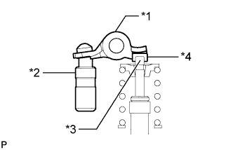 |
Установите 24 рычагов приводов клапанов, как показано на рисунке.
| *1 | Рычаг привода клапана |
| *2 | Механизм регулировки зазора в приводе клапана |
| *3 | Шток клапана |
| *4 | Колпак штока клапана |
| 11. УСТАНОВИТЕ КРЫШКУ ПОДШИПНИКА РАСПРЕДВАЛА (для ряда 2) |
Нанесите тонкий слой моторного масла на шейки распредвала, крышки подшипника и кожуха распредвала.
Установите распредвал № 3 и распредвал № 4 в кожух распредвала.
 |
Проверьте метки и номера на крышках подшипников распредвала и установите их в правильное положение и в нужном направлении.
| 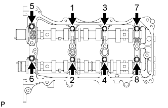 |
Временно затяните 8 болтов в порядке, указанном на рисунке.
| 12. УСТАНОВИТЕ ЛЕВЫЙ КОЖУХ РАСПРЕДВАЛА В СБОРЕ |
Проверьте, чтобы рычаг привода клапана был установлен, как показано на рисунке.
| *1 | Рычаг привода клапана |
| *2 | Механизм регулировки зазора в приводе клапана |
| *3 | Шток клапана |
| *4 | Колпак штока клапана |
| 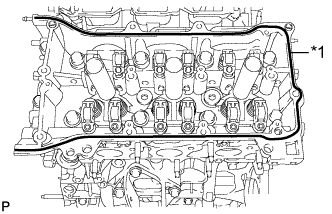 |
Нанесите герметик в виде сплошного валика, как показано на рисунке.
| *1 | Герметик |
| 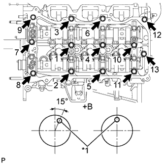 |
Установите левый кожух распредвала и затяните 13 болтов в порядке, показанном на рисунке.
| *1 | Штифт |
| *a | Вид спереди |
| 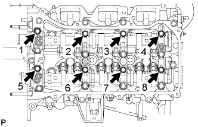 |
Затяните 8 болтов в порядке, указанном на рисунке.
| 13. УСТАНОВИТЕ КРЫШКУ ПОДШИПНИКА РАСПРЕДВАЛА (для ряда 1) |
Нанесите тонкий слой моторного масла на шейки распредвала, крышки подшипника и кожуха распредвала.
Установите распредвал и распредвал № 2 в кожух распредвала.
 |
Проверьте метки и номера на крышках подшипников распредвала и установите их в правильное положение и в нужном направлении.
 |
Временно вверните 8 болтов крышек подшипников в порядке, указанном на рисунке.
| 14. УСТАНОВИТЕ ПРАВЫЙ КОЖУХ РАСПРЕДВАЛА В СБОРЕ |
Проверьте, чтобы коромысло привода клапана № 1 было установлено, как показано на рисунке.
| *1 | Рычаг привода клапана |
| *2 | Механизм регулировки зазора в приводе клапана |
| *3 | Шток клапана |
| *4 | Колпак штока клапана |
 |
Нанесите герметик в виде сплошного валика, как показано на рисунке.
| *1 | Герметик |
| 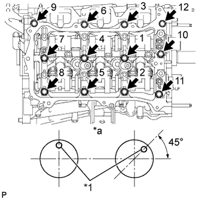 |
Установите правый кожух распредвала и затяните 12 болтов в порядке, показанном на рисунке.
| *1 | Штифт |
| *a | Вид спереди |
 |
Затяните 8 болтов в порядке, указанном на рисунке.
| 15. УСТАНОВИТЕ НАТЯЖИТЕЛЬ ЦЕПИ № 3 В СБОРЕ |
| 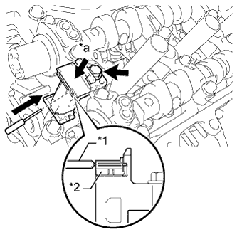 |
Установите натяжитель цепи № 3 и закрепите его болтом.
Нажав на натяжитель цепи, зафиксируйте его, вставив в отверстие штифт диаметром 1,0 мм (0,0394 дюйма).
| *1 | Штифт |
| *2 | Плунжер |
| *a | Нажмите |
| 16. УСТАНОВИТЕ ЗУБЧАТЫЕ КОЛЕСА РАСПРЕДВАЛА И ЦЕПЬ № 2 (для ряда 2) |
| 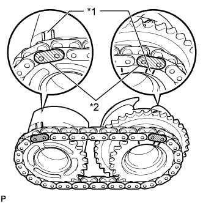 |
Совместите маркированные пластины (желтые) с синхронизирующими метками на зубчатых колесах распредвала, как показано на рисунке.
| *1 | Установочная метка |
| *2 | Пластина с меткой |
Нанесите тонкий слой моторного масла на резьбы и места посадки болтов.
Совместите установочный штифт распредвала с отверстием под штифт в зубчатом колесе распредвала. Установите зубчатое колесо распредвала и левую шестерню распредвала выпускных клапанов с предварительно надетой цепью № 2.
| 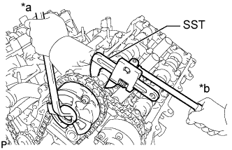 |
Удерживая с помощью SST шестигранный участок каждого распредвала, затяните болты зубчатого колеса распредвала и зубчатого колеса распредвала выпускных клапанов.
| *a | Поверните |
| *b | Удерживайте |
Извлеките штифт из натяжителя цепи № 3 в сборе.
| 17. УСТАНОВИТЕ НАТЯЖИТЕЛЬ ЦЕПИ № 2 В СБОРЕ |
| 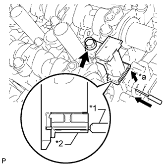 |
Установите натяжитель цепи № 2 и закрепите его болтом.
Нажав на натяжитель цепи № 2 в сборе, зафиксируйте его, вставив в отверстие штифт диаметром 1,0 мм (0,0394 дюйма).
| *1 | Штифт |
| *2 | Плунжер |
| *a | Нажмите |
| 18. УСТАНОВИТЕ ЗУБЧАТЫЕ КОЛЕСА РАСПРЕДВАЛА И ЦЕПЬ № 2 (для ряда 1) |
 |
Совместите маркированные пластины (желтые) с синхронизирующими метками на зубчатых колесах распредвала, как показано на рисунке.
| *1 | Установочная метка |
| *2 | Пластина с меткой |
Нанесите тонкий слой моторного масла на резьбы и места посадки болтов.
Совместите установочный штифт распредвала с отверстием под штифт в зубчатом колесе распредвала. Установите зубчатое колесо распредвала и шестерню распредвала выпускных клапанов с предварительно надетой цепью № 2.
 |
Удерживая с помощью SST шестигранный участок каждого распредвала, затяните болты зубчатого колеса распредвала и зубчатого колеса распредвала выпускных клапанов.
| *a | Поверните |
| *b | Удерживайте |
Извлеките штифт из натяжителя цепи № 2 в сборе.
| 19. УСТАНОВИТЕ УСПОКОИТЕЛЬ ЦЕПИ № 1 |
| 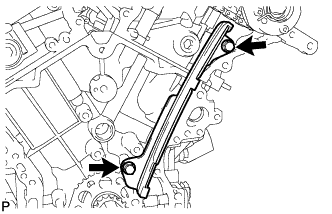 |
Установите успокоитель цепи № 1 и закрепите его 2 болтами.
| 20. УСТАНОВИТЕ УСПОКОИТЕЛЬ ЦЕПИ № 2 |
 |
Установите 2 успокоителя цепи № 2.
| 21. УСТАНОВИТЕ ВЕДУЩУЮ ЗВЕЗДОЧКУ ЦЕПИ ГРМ НА КОЛЕНЧАТОМ ВАЛУ |
| 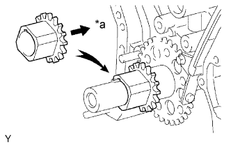 |
Совместите шпоночную канавку ведущей звездочки с установочной шпонкой ведущей звездочки.
Установите ведущую звездочку на коленчатый вал таким образом, чтобы она была направлена внутрь, как показано на рисунке.
| *a | Внутрь |
| 22. УСТАНОВИТЕ ВАЛ ПРОМЕЖУТОЧНОЙ ШЕСТЕРНИ № 1 |
Нанесите тонкий слой моторного масла на поверхность трения вала промежуточной шестерни № 1.
| 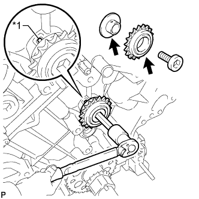 |
Установите, не закрепляя, вал промежуточной шестерни № 1 и промежуточную шестерню № 1 с валом промежуточной шестерни № 2, совместив установочный штифт вала промежуточной шестерни № 1 с канавкой в блоке цилиндров.
| *1 | Штифт |
Шестигранным ключом на 10 мм затяните ось промежуточной шестерни № 2.
Извлечь штифт из натяжителя цепи.
| 23. УСТАНОВИТЕ ЦЕПЬ В СБОРЕ |
 |
Совместите пластину с меткой с синхронизирующими метками, как показано на рисунке, и установите цепь.
| *1 | Пластина с меткой |
| *2 | Установочная метка |
 |
Не надевайте цепь на коленчатый вал, а просто на время положите ее на него.
 |
Вращая зубчатое колесо распредвала в ряду 1 против часовой стрелки, натяните цепь между рядами.
| *1 | Пластина звена цепи |
| *a | При повторном использовании промежуточной цепной шестерни |
| *b | Метка |
| *c | Совместите |
| Поверните |
| 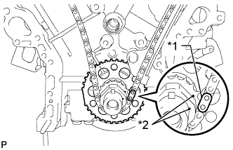 |
Совместите пластину с меткой с установочными метками, как показано на рисунке, и установите цепь на ведущую звездочку коленчатого вала.
| *1 | Пластина с меткой |
| *2 | Установочная метка |
Временно вверните установочный болт шкива.
| 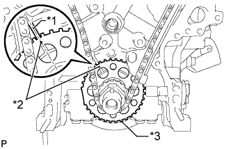 |
Поверните коленчатый вал по часовой стрелке, чтобы совместить его с осевой линией отверстия правого блока (ВМТ такта сжатия).
| *1 | Центральная линия |
| *2 | Установочная метка |
| *3 | Пластина датчика |
| 24. УСТАНОВИТЕ БАШМАК НАТЯЖИТЕЛЯ ЦЕПИ |
 |
Установите башмак натяжителя цепи.
| 25. УСТАНОВИТЕ НАТЯЖИТЕЛЬ ЦЕПИ № 1 В СБОРЕ |
| 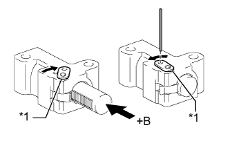 |
Повернув стопорную пластину натяжителя по часовой стрелке, нажмите на плунжер натяжителя цепи, как показано на рисунке.
| *1 | Стопорная пластина |
| *a | Нажмите |
Повернув стопорную пластину натяжителя против часовой стрелки, вставьте в отверстия стопорной пластины и натяжителя штифт диаметром 1,27 мм (0,0500 дюйма), чтобы зафиксировать стопорную пластину.
| 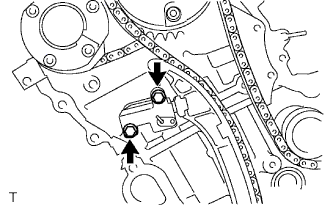 |
Установите натяжитель цепи и закрепите его 2 болтами.
Извлеките штифт из натяжителя цепи № 1.
| 26. ПРОВЕРЬТЕ ФАЗЫ ГАЗОРАСПРЕДЕЛЕНИЯ |
Проверьте установочные метки распредвала.
Убедитесь, что все установочные метки распредвала расположены, как показано на рисунке.
| *1 | Установочная метка | - | - |
| *a | Точка обзора | - | - |
 |
Если фазы газораспределения смещены, установите цепной привод газораспределительного механизма заново.
Выверните установочный болт шкива.
| 27. УСТАНОВИТЕ КРЫШКУ ЦЕПНОГО ПРИВОДА ГАЗОРАСПРЕДЕЛИТЕЛЬНОГО МЕХАНИЗМА В СБОРЕ |
Установите крышку цепного привода газораспределительного механизма (Нажмите здесь).